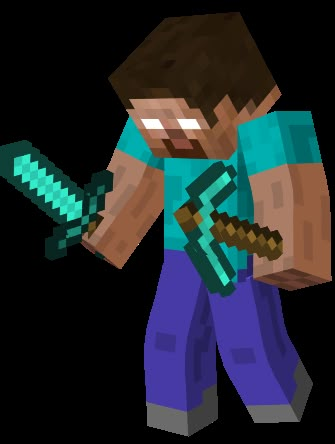

Herobrine
Herobrine é uma das lendas mais misteriosas e persistentes do universo de Minecraft. Descrito como uma figura idêntica ao personagem padrão do jogo, porém com olhos completamente brancos e sem pupilas, ele teria o poder de aparecer silenciosamente no mundo dos jogadores, observando à distância ou interferindo de maneiras sutis e inquietantes.
Minecraft
Minecraft é um dos jogos mais populares do mundo, conhecido por sua liberdade criativa e estilo visual baseado em blocos. Lançado oficialmente em 2011, o jogo permite que os jogadores explorem um mundo aberto praticamente infinito, onde podem coletar recursos, construir estruturas e sobreviver a perigos como monstros e ambientes hostis. Existem diferentes modos de jogo, como o modo sobrevivência, em que o jogador precisa gerenciar sua saúde e fome, e o modo criativo, que oferece recursos ilimitados para construir livremente. Minecraft também se destaca pela forte comunidade, que cria mods, mapas personalizados e conteúdos variados, tornando o jogo sempre renovado e interessante.
Mojang
A Mojang é uma empresa de desenvolvimento de jogos eletrônicos fundada na Suécia. Ela ficou mundialmente famosa por criar o Minecraft, que se tornou um enorme sucesso global. Ao longo dos anos, a empresa expandiu suas atividades, trabalhando em novos projetos e atualizações constantes para seus jogos. Em 2014, a Mojang foi adquirida pela Microsoft, o que ajudou a ampliar ainda mais o alcance de seus produtos, levando-os para diversas plataformas e públicos. Mesmo após a aquisição, a empresa manteve sua identidade criativa, continuando a focar em experiências inovadoras e na interação com a comunidade de jogadores.
Notch
Notch, cujo nome verdadeiro é Markus Persson, é um programador e desenvolvedor de jogos sueco, conhecido principalmente por ser o criador do Minecraft. Ele começou a desenvolver o jogo de forma independente, inspirado por outros jogos de construção e exploração. O sucesso inesperado de Minecraft fez com que Notch se tornasse uma figura muito conhecida na indústria dos games. Com o crescimento da Mojang, ele acabou vendendo a empresa para a Microsoft e se afastando do desenvolvimento do jogo. Apesar de não estar mais diretamente envolvido com Minecraft, sua criação continua sendo extremamente influente e relevante até hoje.